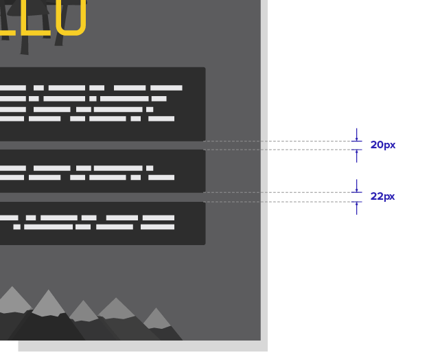
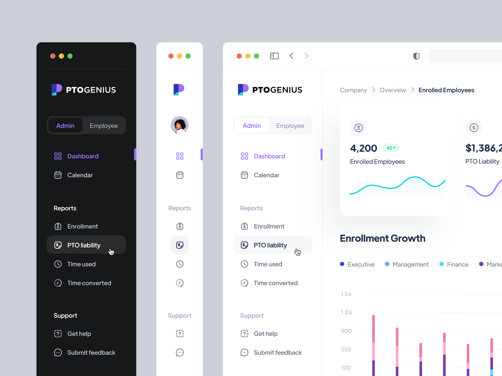
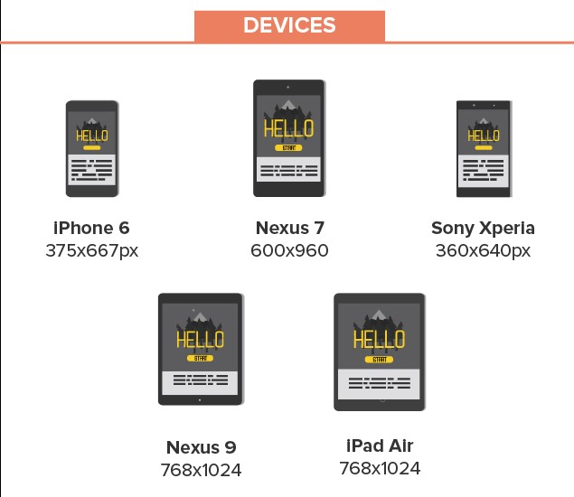
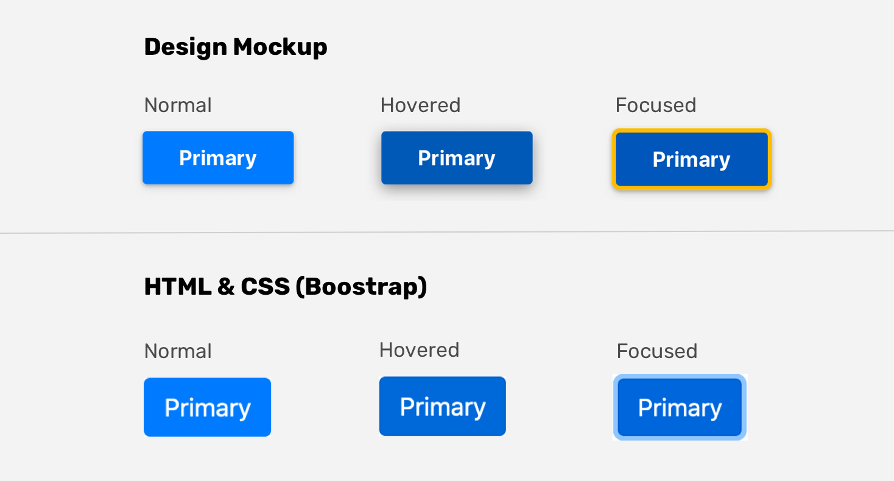
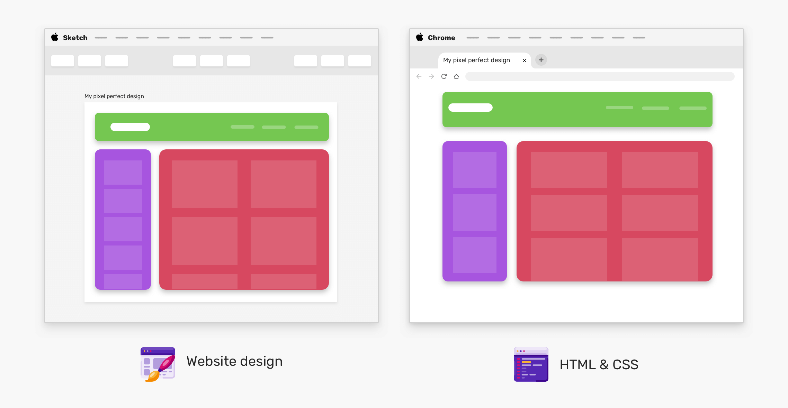

Дизайн с точност до пиксел е дизайн, който осигурява максимална острота и точност на картината. При такъв тип дизайн липсват аберации, нежелано замъгляване и размазване, изкривявания и много други несъвършенства, които могат да възникнат в дизайна на уеб сайт или в интерфейса на приложение, заради използването на артефакти за компресия и изчистване на изкривявания. Като краен резултат се получава по-изчистен и последователен външен вид на дизайна. Това се постига благодарение на използването на всеки един пиксел.
Техники за разработка на Pixel Perfect дизайн
Напасване на пиксели (Pixel Fitting)
Тази техника помага на дизайнерите да придобият микроскопичен контрол във Photoshop и им позволява да използват векторна графика ефективно. Също така помага на дизайнерите да оптимизират векторите, които са вмъкнали от Illustrator във Photoshop, без да се получи загуба на качеството. Така те ще имат възможността да използват векторна графика за дигитален дизайн, което помага да се избегнат всякакви несъвършенства, възникнали при пренасяне на графики от Illustrator към Photoshop.
Това са техники, чрез които дизайнерите могат да придават дълбочина на дизайните си. Дълбочината на пикселите определя колко цветова информация е налична за всеки пиксел в изображението. Колкото повече информация е налична на пиксел, толкова повече цветове ще са налични и цветовото представяне на изображението ще е по-точно. Техниките позволяват на дизайнерите да използват контраст по ефективен начин, както и да смесват светли и тъмни пиксели.
Чрез тази техника дизайнерите могат да подравнят пикселите по начин, по който се постига по-перфектен завършек. Използва се главно за премахване на половинчати пиксели, които причиняват нежелано заглаждане.
Тази техника позволява на дизайнерите да манипулират елементите на пикселния дизайн, без да ги нарушават. Тя е полезна за онези дизайнери, които изпитват затруднения при поставянето на вектори от Illustrator във Photoshop. Използвайки тази техника, те могат да запазят качеството на уебсайта, без да нарушават пикселите и замъгляването.
Pixel Perfect Уеб разработка представлява процес, при който се внедрява макет на уеб дизайн в HTML и CSS като кодираният резултат трябва да съответства точно на зададения макет. Основните елементи на добрия уеб дизайн включват: остри ръбове, перфектно подравняване и разстояние, управление на цветовете, последователност, яснота и простота. Преди да се поиска от девелопър да направи Pixel Perfect Уеб разработка, трябва да се установи дали дизайнерът подготвя Pixel Perfect Уеб дизайн. Не винаги дизайнерите проверяват работата си обстойно и се допускат грешки като разлика в разстоянията между отделни елементи. Затова има “споразумение” между разработчици и дизайнери, което гласи, че разработчиците, използвайки HTML и CSS правила за разполагане и оформление на елементи, могат да поправят всички малки несъответствия в дизайна.

Фиг. 5 - Пример за уеб дизайн, при който разстоянието е предназначено да бъде еднакво, но по случайност се различава с няколко пиксела. [1]
За постигането на Уеб дизайн с точност до пиксел е желателно да се следват няколко стъпки:
Определяне на елементите на дизайна и избиране на инструмент за проектиране, който поддържа дизайнерски символи и компоненти
Това е първият етап на разработка на Pixel Perfect уеб дизайн. На този етап се прави среща с екипа за разработка и дизайнерския екип, за да се определят глобалните елементи и шаблони. Това ще са компонентите за многократна употреба, чието дефиниране ще направи разработката значително по-лесна.
Освен определяне на елементите на дизайна, е нужно да се избере инструмент за проектиране като Sketch или Adobe XD. Те помагат за поддържането на консистентността на дизайна, благодарение на това, че притежават функции за проектиране на предварително стилизирани елементи, наречени символи или компоненти, които могат да се използват повторно в дизайна.
Например, ако създадем някакъв бутон в определен стил, той ще има еднакъв вид навсякъде в дизайна и всякакви промени върху бутона ще се отразят върху всички негови инстанции.
Компонентите за многократна употреба се наричат система за проектиране. В тази система обикновено са включени:
Цветове
Типография
Дизайн на бутони
Дизайн на карти
Маркирани списъци
Стилове като сенки и радиуси
Пространство между елементите
Псевдо-класове за линкове: Active, Visited, Focus, Hover
Избиране на резолюцията на екрана
Едно от основните затруднения при разработката на уеб сайт е приспособяването му към смяната на размерите на екрана. Ако се промени размера на прозореца на един уеб браузър, уебсайтът ще се адаптира. Но ако се промени прозореца на използвания инструмент за уеб дизайн, елементите няма да променят размера си или да се движат. Тази разлика е източникът на една от най-големите пропуски в комуникацията между уеб дизайнер и уеб разработчик.
Първо трябва да се обсъди с дизайнера ширината на контейнера. Трябва да се разберат точките на прекъсване, които ще се разработят на уебсайта. Ако мобилният дизайн е приоритет, уеб дизайнерите могат да създадат две версии на дизайнерските файлове: мобилна и настолна. За да се покрият най-често срещаните смартфони и настолни компютри, може да се използва 1440px ширина за настолни компютри и 375px ширина за мобилни устройства. Понякога се срещат и дизайни на таблети, но това не е толкова често. Ако таблетът е важен за дадения проект, 768px е добра разделителна способност, която да се използва за него.
Задаването на правилния размер на основния контейнер е важно и твърде често се забравя. Много дизайнери избират да проектират оформления на работния плот с ширина 1920px, което може да се окаже проблемно на по-малки настолни екрани, ако не е направено правилно. Например ако дизайнерите запълнят екрана със съдържание отляво надясно с размер на шрифта 16px, разработчикът ще бъде поставен пред голямо предизвикателство докато успее да го събере на 1024px екран. Ако размерът на шрифта е 24px, за да се използва широкият 1920px екран, разработчикът ще трябва да коригира размера на шрифта за по-малки резолюции на работния плот. В противен случай типографията ще изглежда потресаващо и няколко знака ще се поберат на всеки ред от текст.
Друг подход за работа с различни резолюции на работния плот е да се проектира за 1024px и да се инструктира разработчика да кодира всички елементи така, че да могат да се мащабират пропорционално, използвайки „rem“ вместо пиксели. Това не винаги е подходящо и принуждава разработчика да прави много изчисления на съотношенията.
Използването на гридове и CSS рамки помага да се установят стандарти за отзивчивостта на дизайна, но въпреки това настройките на отзивчивото поведение зависят до голяма степен от преценката на разработчиците.
Обсъждане на неинтуитивните поведенчески реакции
Съществуват много елементи от дизайна, чието поведение в различни ситуации не е интуитивно и може да се интерпретира по различни начини.
Страничната лента - sidebar, е типичен пример за елемент, чието поведение не може да се предвиди. Разработчиците трябва да са информирани за това дали страничната лента трябва да бъде поставена над основното съдържание на мобилното устройство, под него или да изчезне напълно.

Фиг. 7 - Примери за поведение на страничната лента [6]
Декоративните изображения и фонови графики също могат да заемат ненужно място в по-сгъстените изгледи. При по-малки екрани трябва да се помисли дали се иска те да намалеят, или да бъдат скрити.
Повтарящите се елементи като карти, показващи членове на екипа, за предпочитане трябва да бъдат проектирани с нечетен брой елементи, за да покажат на разработчиците какво трябва да бъде поведението, когато се добавят нови елементи. Следващата карта трябва ли да бъде централизирана или ляво подравнена, ако падне на нов ред?
Таблиците с данни също са предизвикателство за малките екрани, тъй като целта им е да подреждат информация както вертикално, така и хоризонтално. Например в Уикипедия може да се види, че таблиците освен вертикално, се скролват и хоризонтално на мобилни екрани.
Анализиране и имплементиране на дизайна
Преди да започнат разработката, разработчиците трябва да проверят дали разбират системата, която ще проектират и дали е завършена и са изпълнени техните нужди. Анализирането на това кои стилове ще трябва да бъдат настроени, къде се използват и как ще могат да се различават в различните страници, ще помогне на разработчика да направи план за проекта.
Хубаво е да има примерна страница, съдържаща цялата основна типография и елементи (като връзки, списъци и бутони), за да може да се прегледа и потвърди, че всички CSS стилове са подготвени. Тази страница се добавя като страница по подразбиране, която се използва повторно във всички проекти. Така например, ако някой дизайн няма списъци, страницата ще напомня, че трябва да се направят такива, тъй като е вероятно те да бъдат използвани в даден момент на уебсайта.
Както за спестяване на време, така и за предотвратяване на човешка грешка, разработчиците трябва да използват инструментите за копиране на CSS стиловете направо от дизайна, предоставени от софтуера за уеб дизайн. Photoshop има разширение, което позволява това да се прави, докато Sketch, Adobe XD, Zeplin, Avocode и други софтуери го имат като готова функционалност.
Важен съвет е винаги да сме сигурни, че веднага сме инсталирали своите премиум шрифтове с валидни лицензи. Ако няма лиценз, при разработката ще трябва да се работи с временен шрифт и това ще причини много различни ефекти на това как изглежда страницата. Добавянето на правилния шрифт по-късно ще ни принуди да се върнем назад и да коригираме страниците, особено отзивчивостта на дизайна, което коства ненужно време.
Ако разработчик открие, че нещо в дизайна не изглежда правилно, задължително трябва да попита дизайнера за това, ако не е очевидно, че е грешка в дизайна. Ако даден елемент е на 2px разстояние от грида, това вероятно е грешка, но ако има нещо по-сериозно, може да е умишлено.
Проверка на качеството на крайния продукт
След като дадена страница е разработена, е време да бъде проверена спрямо файловете с дизайните за предоставените резолюции. Има добри и полезни разширения за браузър, които да използваме за това, например PerfectPixel. Те позволяват наслагването на дизайните върху готовата страница с прозрачност, за да може да се види къде не съвпадат.
Фиг. 8 - Проверка за несъответствия между макет и готовия дизайн [1]
Трябва също да се провери разликата между браузърите, устройствата и резолюциите на екрана. В този процес за осигуряване на качеството се проверяват тези неща по подразбиране:

Фиг. 10 - Размери на екран на мобилни устройства и таблети [1]
Браузъри: Safari, Google Chrome, Mozilla, Microsoft Internet Explorer, Microsoft Edge
Модерен CSS
Съвременният CSS, ни предоставя множество техники, които позволяват изграждането на гъвкави уебсайтове. Основните, които помагат за изграждането на Pixel Perfect сайт са:
CSS гридове
Тъй като CSS гридовете се поддържат от март 2017 г., имаме много мощен инструмент, който можем лесно да използваме, за да установим грид. С CSS гридовете създаваме мрежа, която е динамична и може да преоразмерява елементите в нея въз основа на наличното пространство.
Оразмеряването на размера на шрифта на даден елемент, въз основа на ширината на изгледа в CSS е било мечта преди 10 години. Днес това е възможно благодарение на CSS единиците за изглед.
- Код 2 - viewport unit
.page-title {
font-size: calc(14px + 1vw);
}
CSS функции за сравнение
Тъй като функциите за сравнение на CSS вече се поддържат във всички основни браузъри, можем да ги използваме, за да зададем минимална и максимална стойност за компонент. Също така, може да се направи така, че компонентът плавно да се променя в зависимост от конкретно правило.
В следния пример е показано как да променим радиуса на границата на елемент за различни размери на екрана.
Минималният радиус на границата е 7px, а максималният е 20px. Средната стойност 2vw се нарича препоръчителна стойност. Когато ширината на изгледа бъде преоразмерена, радиусът на границата ще се промени съответно.
Ефектът на CSS Frameworks
Нека кажем, че е предоставен пълен дизайн на уеб приложение и екипът за разработка иска да го приложи в Bootstrap CSS рамка. Още на първите страници, внедрени от екипа за разработка, ще се види, че някои елементи на дизайна са наследили дизайнерски детайли от Bootstrap.
На следния пример, имаме създадения персонализиран бутон, а под него е реализацията чрез код.

Фиг. 11 - Дизайн на бутон от макет и неговата реализация чрез HTML и CSS [4]
Някои разработчици смятат, че е добре да се игнорират оригиналните детайли за дизайна на бутона и просто променят фона на бутона и оправят по-забележимите несъответствия. Дори и детайлите да са прости, те могат да разграничат уебсайт от друг. Лесно е да се персонализира стила и няма причина за игнорирането такива подробности.
Въпреки посочения пример, използването на рамки не е лошо нещо. Особено, ако човек може да борави с тях и крайният резултат е сполучлив. Най-важно е умението да ги персонализирате и използвате според вашите нужди, без да пренебрегвате малките детайли.
Препятствия при Pixel Perfect Уеб разработка
Голям недостатък на тази Уеб разработка е това, че стандартите, които се прилагат за Pixel perfect, увеличават времето, необходимо както за проектиране, така и за разработка на дизайн. Разработването на дизайн с точност до пиксел е изглежда идеално, когато се прави във PhotoShop. Проблемите започват да се появяват, когато се премине към кодене. Различните браузъри интерпретират един и същ код по различен начин, видът на дизайна се променя при различните екрани и устройства, също така никога не може да се предвиди размера на работния плот, който хората използват. Това са проблеми, които правят постигането на 100% съответствие между макетния дизайн и разработения уеб дизайн невъзможно, затова разработчиците по-скоро се стремят към максимално приближаване към оригиналния макет.

Фиг. 12 - Разликата между PhotoShop и HTML/CSS дизайн [4]
Според интерактивният дизайнер Кайл Конрад, Pixel Perfect дизайнът е като цяло безсмислен. Вярването, че следенето на дизайн пиксел по пиксел ще го направи перфектен, би било доста необмислено и традиционно. По-скоро Pixel Perfect може да се опише като дизайн, който е последователен и преднамерен. Това е подход, който изглежда практичен и постижим.
Pixel Perfect - преди и сега
Ако направим сравнение между броя на продадените мобилни устройства днес и преди 10 години, ще установим, че разликата се измерва в милиони. Преди 10 години желанието на даден клиент, за Уеб дизайн с точност до пиксел, е било значително по-възможно за реализация. Броят на лаптопите е бил много по-малък, отколкото сега, а таблетите току-що са започнали да навлизат. Броят на размерите на екран, с които разработчикът е трябвало да се съобрази, не е бил толкова голям. Един дизайн на работния плот с размер 1024*768 може да е бил повече от достатъчен. Това обаче не може да се направи днес с огромното количество налични устройства.
През последните години CSS се разви много, като даде на разработчиците различни възможности за имплементиране на дадено оформление. В днешно време отзивчивият дизайн се превърна в стандарт за уеб дизайна и когато става въпрос за такъв дизайн не е удачно да се използва термина Pixel Perfect. По логично е да се мисли в посока на “външен вид и усещане”. В този случай има определен стил за сайта и целта на front-end разработчика е да приложи този стил на различни размери на екрана, като запазва стила и усещането.